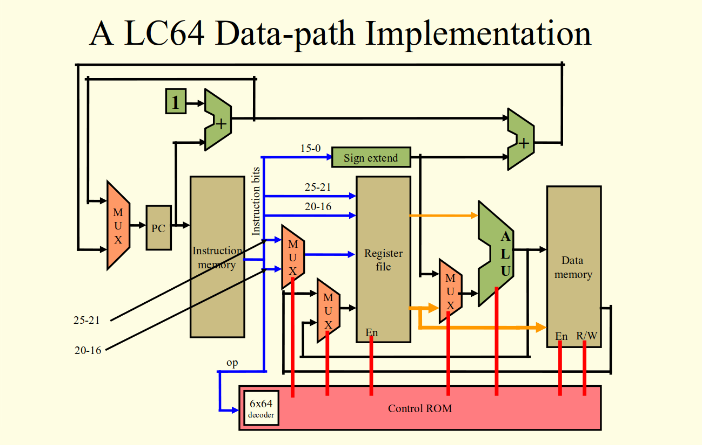
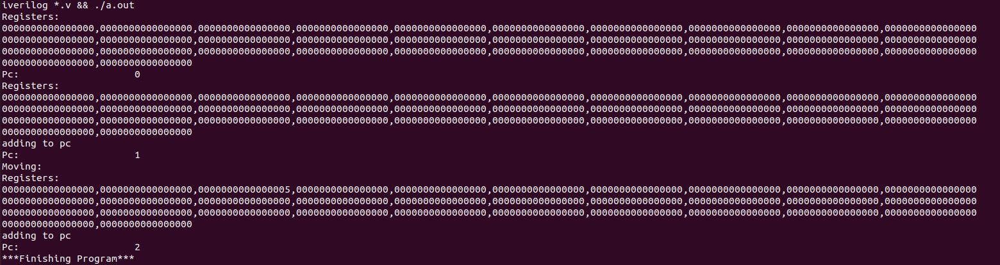

SINGLE-CYCLE PROCESSOR IMPLEMENTATION

Here is the architecture design of the single-cycle processor that was implemented for this project.
More specificaly this project is an implementation of a “lw” instruction made from components that I created i.e. the instruction and data memory, register file, muxes, alu, program counter, etc. The asm file loads the value of “5” into the register at index 2 as shown in the picture of the output when ran. The lw instruction also makes use of the “halt” instruction I made prior to the lw instruction, so that when the halt instruction is ran the program halts.
This picture is showing the content of the registers for each addition to the program counter, eventually showing the result of the 'lw' instruction.
